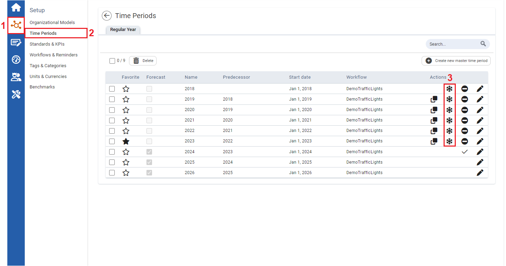

Users can prevent updates and recalculations of KPI values in closed time periods. By freezing time periods, users can maintain accuracy and consistency of data, making it easier to compare values across time scales, and drawing insights from those comparisons.
To freeze recalculations of closed time periods

| 1 | On the left navigational panel, click the Setup icon. The Setup menu appears. |
| 2 | Click Time Periods. The Time Periods window appears. |
| 3 | On the Time Periods window, to stop a Time Period from being recalculated for an upcoming time period, click its Freeze icon. Note: That will also freeze the CO2 factors of the corresponding time period. |